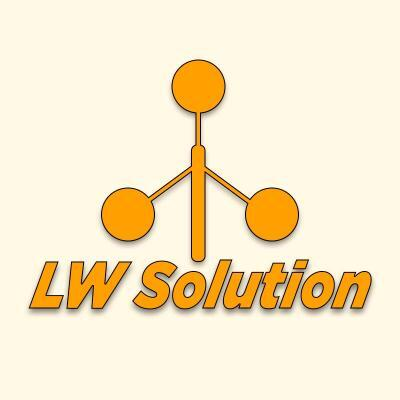
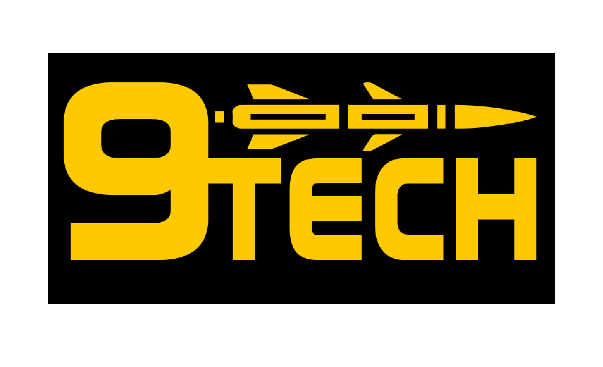
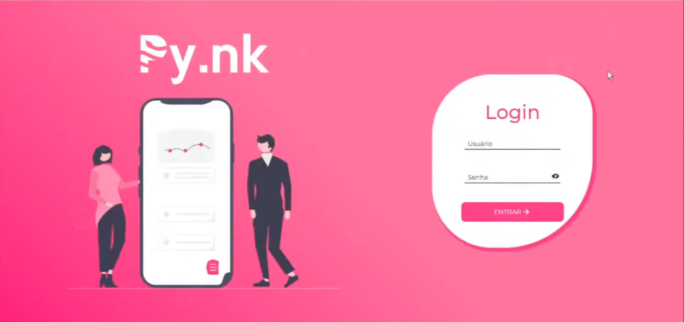
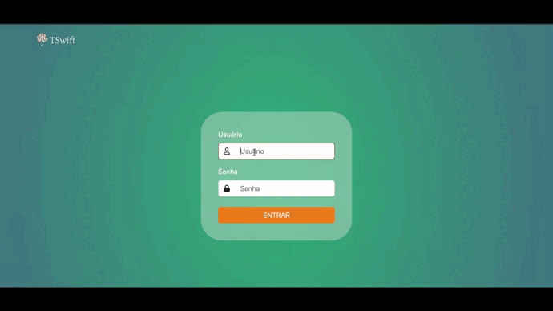

ANTEDEGUEMON - Extração de Insights
Solução para automatizar a extração de informações relevantes de interações textuais em sistemas de
atendimento, utilizando Processamento de Linguagem Natural (PLN). O sistema visa extrair, classificar e
sumarizar dados de grandes volumes de interações, gerando insights estratégicos para otimizar o atendimento
ao cliente e fornecendo uma interface intuitiva para navegação e interpretação dos dados. O projeto aborda a
dificuldade na extração de dados, sumarização ineficiente, classificação inconsistente e falta de interface
intuitiva para análise.
Tecnologias: Processamento de Linguagem Natural (PLN), Python
(inferido).
- Minhas Ações:
- Scrum Master
- Tratamento dos Dados no pré-processamento
- Desenvolvimento de Modelos de Classificação
- Desenvolvimento de Modelos de Tópicos
Acessar
Documentação

NO CLOUD - Mapeamento de Nuvens
Em parceria com a Visiona, este projeto desenvolveu uma aplicação mobile integrada à nuvem para mapeamento
automático de nuvens e sombras em imagens do satélite CBERS4A/WPM. O objetivo é fornecer máscaras de nuvens
de alta precisão, superando a limitação da ausência dessas máscaras que dificulta a análise de grandes
volumes de imagens. A solução utiliza modelos de Deep Learning, permitindo definir área e período de
interesse, acessar imagens, mapear nuvens/sombras automaticamente, visualizar resultados e baixar máscaras
vetoriais.
Tecnologias: Deep Learning, Mobile, Computação em Nuvem.
- Minhas Ações:
- Pré processamento das imagens .tiff para realizar o treinamento da IA
- Treinamento da IA para detecção de nuvens, utilizando Yollo V8
- Tratamento dos dados de saída da IA, aplicando filtros na imagem original .tiff
- Criação das camadas das analises de nuvens e sombras
- Desenvolvimento de uma API para disponibilizar os dados da IA
Acessar Documentação

LW SOLUTION - Monitoramento Ambiental
Projeto para expandir o portfólio da Tecsus com monitoramento ambiental de baixo custo e alta eficiência.
Desenvolveu estações meteorológicas para coletar dados (vento, chuva, umidade, temperatura, pressão) e
transmiti-los a um servidor central. Os dados são processados e exibidos em um portal online com função
educativa, explicando conceitos matemáticos e a importância do monitoramento na prevenção de desastres,
engajando alunos do ensino médio.
Tecnologias: IoT (Sensores), Backend (Servidor Central), Frontend
(Portal Online).
- Minhas Ações:
- Scrum Master
- Tratamento dos dados do Banco de Dados não Relacional para a Relacional
- Sistema de gerenciamento de estações meteorológicas

NINE TECH - Gerenciamento de Projetos
Em parceria com a Siatt, este projeto desenvolveu um Sistema de Gerenciamento de Times para Projetos
Complexos. A solução permite macro e micro gerenciamento, abordando dificuldades como gestão ineficiente,
comunicação, monitoramento de progresso e interface pouco amigável. O software permite importar dados de
projetos via Excel, atribuir pacotes de trabalho, e acompanhar mudanças em projetos, pacotes, subpacotes e
tarefas, com foco em organização, acompanhamento em tempo real e colaboração.
Tecnologias: Web (Frontend/Backend), Gerenciamento de Dados (Excel
Import).
- Minhas Ações:
- Estruturação do Banco de Dados
- Sistema de acompanhamento de progressão das Tarefas
- Sistema de Importação de dados do Excel

Py.nk
Sistema de internet banking desenvolvido com metodologias ágeis, oferecendo funcionalidades essenciais para
clientes, gerentes de agência e gerentes gerais. Além das funções bancárias básicas, o sistema implementa
controle de movimentações, gestão de contas e tratativas específicas como arredondamento bancário.
Tecnologias: Flask, Python e SQL.
- Minhas Ações:
- Product Owner (PO)
- Desenvolvimento Back-end
- Estruturação do modelo de banco de dados
Acessar Projeto

TSwift - Sistema de Inspeção de Entrada de Grãos
Plataforma de controle de recebimento de grãos no setor agroindustrial, com cadastros de usuários, inspeções
de entrada, geração de relatórios e controle de acessos diferenciados. O sistema foi desenvolvido seguindo o
modelo de entregas ágeis em 4 sprints.
Tecnologias: ReactJS, Node.js, SQL, TypeScript e Prisma.
- Minhas Ações:
- Desenvolvimento Full Stack (Back-end com Node.js e Front-end com ReactJS)
- Integração entre sistemas (API, banco de dados e front-end)
- Controle de Acessos personalizados
- Implementação de funcionalidades de relatórios gerenciais
- Foco nas funcionalidades do sistema, com menor ênfase no design